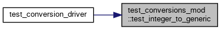
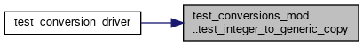
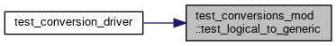
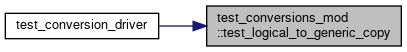
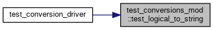
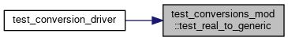
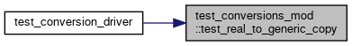
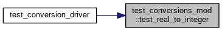
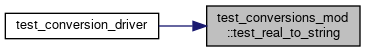
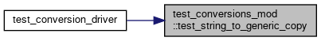

Functions/Subroutines | |
| subroutine | test_is_integer () |
| subroutine | test_is_real () |
| subroutine | test_is_logical () |
| subroutine | test_real_to_integer () |
| subroutine | test_logical_to_integer () |
| subroutine | test_logical_to_real () |
| subroutine | test_integer_to_string () |
| subroutine | test_real_to_string () |
| subroutine | test_logical_to_string () |
| subroutine | test_string_to_generic () |
| subroutine | test_string_to_generic_copy () |
| subroutine | test_integer_to_generic () |
| subroutine | test_integer_to_generic_copy () |
| subroutine | test_real_to_generic () |
| subroutine | test_real_to_generic_copy () |
| subroutine | test_logical_to_generic () |
| subroutine | test_logical_to_generic_copy () |
Function/Subroutine Documentation
◆ test_integer_to_generic()
| subroutine test_conversions_mod::test_integer_to_generic |
Definition at line 166 of file test_conversions.F90.
Here is the caller graph for this function:

◆ test_integer_to_generic_copy()
| subroutine test_conversions_mod::test_integer_to_generic_copy |
Definition at line 184 of file test_conversions.F90.
Here is the caller graph for this function:

◆ test_integer_to_string()
| subroutine test_conversions_mod::test_integer_to_string |

◆ test_is_integer()
| subroutine test_conversions_mod::test_is_integer |
◆ test_is_logical()
| subroutine test_conversions_mod::test_is_logical |
◆ test_is_real()
| subroutine test_conversions_mod::test_is_real |
◆ test_logical_to_generic()
| subroutine test_conversions_mod::test_logical_to_generic |
Definition at line 248 of file test_conversions.F90.
Here is the caller graph for this function:

◆ test_logical_to_generic_copy()
| subroutine test_conversions_mod::test_logical_to_generic_copy |
Definition at line 266 of file test_conversions.F90.
Here is the caller graph for this function:

◆ test_logical_to_integer()
| subroutine test_conversions_mod::test_logical_to_integer |
◆ test_logical_to_real()
| subroutine test_conversions_mod::test_logical_to_real |
◆ test_logical_to_string()
| subroutine test_conversions_mod::test_logical_to_string |
Definition at line 107 of file test_conversions.F90.
Here is the caller graph for this function:

◆ test_real_to_generic()
| subroutine test_conversions_mod::test_real_to_generic |
Definition at line 207 of file test_conversions.F90.
Here is the caller graph for this function:

◆ test_real_to_generic_copy()
| subroutine test_conversions_mod::test_real_to_generic_copy |
Definition at line 225 of file test_conversions.F90.
Here is the caller graph for this function:

◆ test_real_to_integer()
| subroutine test_conversions_mod::test_real_to_integer |
Definition at line 50 of file test_conversions.F90.
Here is the caller graph for this function:

◆ test_real_to_string()
| subroutine test_conversions_mod::test_real_to_string |
Definition at line 94 of file test_conversions.F90.
Here is the caller graph for this function:

◆ test_string_to_generic()
| subroutine test_conversions_mod::test_string_to_generic |

◆ test_string_to_generic_copy()
| subroutine test_conversions_mod::test_string_to_generic_copy |
Definition at line 140 of file test_conversions.F90.
Here is the caller graph for this function:
